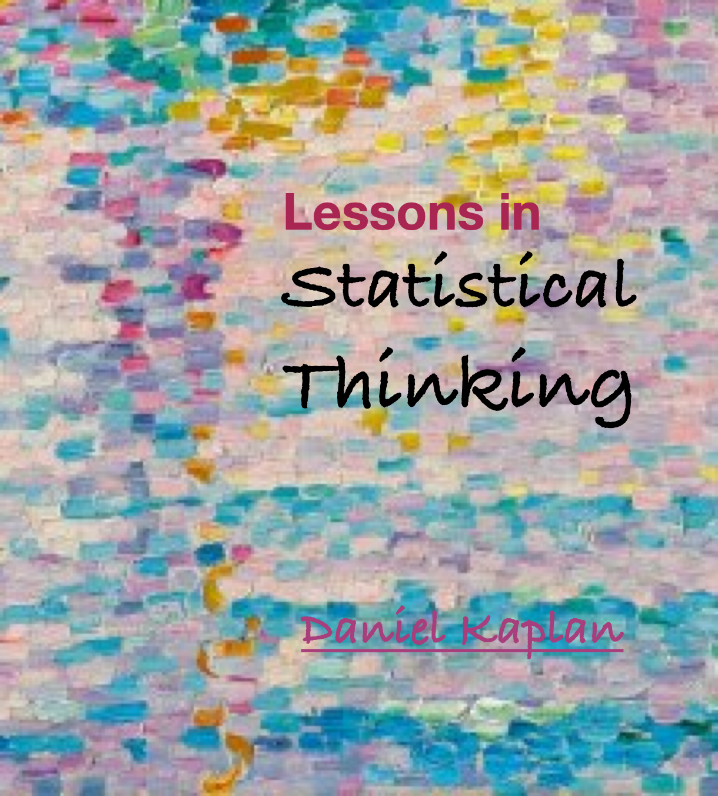

Lessons in Statistical Thinking
Preface

One of the oft-stated goals of education is the development of “critical thinking” skills. Although it is rare to see a careful definition of critical thinking, widely accepted elements include framing and recognizing coherent arguments, the application of logic patterns such as deduction, the skeptical evaluation of evidence, consideration of alternative explanations, and a disinclination to accept unsubstantiated claims.
“Statistical thinking” is a variety of critical thinking involving data and inductive reasoning directed to draw reasonable and useful conclusions that can guide decision-making and action.
Surprisingly, many university statistics courses are not primarily about statistical reasoning. They do cover some technical methods used in statistical reasoning, but they have replaced notions of “useful,” “decision-making,” and “action” with doctrines such as “null hypothesis significance testing” and “correlation is not causation.” For example, a core method for drawing responsible conclusions about causal relationships by adjusting for “covariates” is hardly ever even mentioned in conventional statistics courses.
These Lessons in Statistical Thinking present the statistical ideas and methods behind decision-making to guide action. To set the stage, consider these themes of statistical thinking that highlight its specialized role in the broader subject of critical thinking.
Variation is the principal concern of statistical thinking. We are all familiar with variation in everyday life, for example variation among people: height varies from one person to another as does eye color, political orientation, taste in music, athletic ability, susceptibility to COVID, resting heart rate and blood pressure, and so on. Without variation, there would be no need for statistical thinking.
Data are records of actions, observations, and measurements. Data is the means by which we capture variation so that we can make appropriate statements about uncertainty, trends, and relationships. The appropriate organization of data is an important topic for all statistical thinkers. There are conventions for data organization which are essential for effective communication, collaboration, and applying powerful computational tools.
At the heart of the conventions used in data organization is the concept of a variable. A single variable records the variation in one kind of observable, for instance, eye color. A data frame consists of one or more variables, all stemming from observation of the same set of individuals.
The description or summarizing of data consists of detecting, naming, visualizing, and quantifying the patterns contained within data. The statistical thinker knows the common types of patterns that experience has shown are most helpful in summarizing data. These Lessons emphasize the kinds of patterns used to represent relationships between and among variables.
Critical thinking involves the distinction between several types of knowledge: facts, opinions, theories, uncertainties, and so on. Statistical thinking is particularly relevant to evaluating hypotheses. A hypothesis is merely a statement about the world that might or might not be true. For example, a medical diagnosis is a hypothesis about what ails a patient. A central task in statistical thinking is the use of data to establish an appropriate level of belief or plausibility in a given hypothesis versus its alternatives. In Lessons, we frame this as a competition between hypotheses.
Just as a doctor uses a diagnosis to choose an appropriate treatment for a patient, so our level of belief in relevant hypotheses shape the decisions and actions that we take.
The many concepts, techniques, and habits of statistical thinking presented in these Lessons are united toward establishing appropriate levels of belief in hypotheses, beliefs informed by the patterns in variation that we extract from data.
Acknowledgements
I, like most people, suffer from a cognitive trait called “confirmation bias.” This bias describes people placing more reliance on information that confirms their previous beliefs or values. Becoming aware of this bias, and actively seeking information that challenges our prior beliefs, is a good practice for critical thinking.
I think that confirmation bias is one of the causes for the compartmentalization of academia into “disciplines.” A sign of such compartmentalization is the similarity in the contents of disciplinary textbooks. This creates a potentially important role for outsiders who have cognitive freedom to look for what is historically contingent and arbitrary about the ways disciplines define themselves.
I was fortunate, in the middle of my career, to be offered a job that permitted me to teach as an outsider. So my first acknowledgement must go to my senior-level colleagues in the science division of Macalester College—David Bressoud, Wayne Roberts, Jan Serie, and Dan Hornbach—who overcame confirmation bias and hired me despite my lacking formal credentials in any of the areas in which I was to teach: applied mathematics, statistics, and computer science.
David, Jan, and Dan also encouraged me to act on my belief that introductory university-level math and statistics were, in the 1990s, in a rut. Among other problems, math and stat courses put way too much emphasis on theoretical topics that do not contribute to developing broad and useful understanding. (Outside of calculus teachers, anyone who has taken a calculus course and has gone on in science can recognize that much of what they were taught—limits, convergence, and algebraic tricks—doesn’t inform their scientific work.) Along with colleagues Tom Halverson and Karen Saxe, I worked to develop a modeling and computationally based curriculum that could cover in two semesters math and stats that provided a strong foundation for professional quantitative work.
Crucial support in this early work came from the the Howard Hughes Medical Institute and the Keck Foundation as well as the renowned statistics educator George Cobb at Mt. Holyoke College and, later, from Joan Garfield and her educational psychology research group at the University of Minnesota. I benefited as well from the enthusiasm of Phillip Poronnik and Michael Bulmer at the University of Queensland. Nicholas Horton and Randall Pruim, at Amherst College and Calvin University respectively, became essential collaborators, particularly with respect to the many resources provided created as part of Project MOSAIC (2009-2016) and funded by the US National Science Foundation (NSF DUE-0920350).
At a very early stage of this project, I had the luck to become acquainted with the work of two computational statisticians at the University of Auckland, Ross Ihaka and Robert Gentleman, who were developing the R language in part for teaching introductory statistics. In 2010, in another stroke of good fortune, I met the two creators of RStudio (now Posit PBC), JJ Allaire and Joe Cheng. My statistics classroom became the first demonstration site for their incredible product. The team that JJ and Joe put together, particularly those I have been lucky to know—Hadley Wickham, Winston Chang, and Garrett Grolemund—created the software ecosystem that has enabled millions of professionals and students to work and learn with R.
A special thanks to the US Air Force Academy where I worked for three years after my retirement from Macalester as a distinguished visiting professor. Support from the Academy Research and Development Institute (ARDI) made this financially feasible and the staff of the DFMS department, particularly Michael Brilleslyper, Bradley Warner, and Lt. Col. Kenneth Horton provided a vibrant intellectual community.
I also want to express my gratitude to the many students over a decade in Math 155 at Macalester College and the cadets in Math 300Z at USAFA who helped me shape these Lessons as a coherent whole.